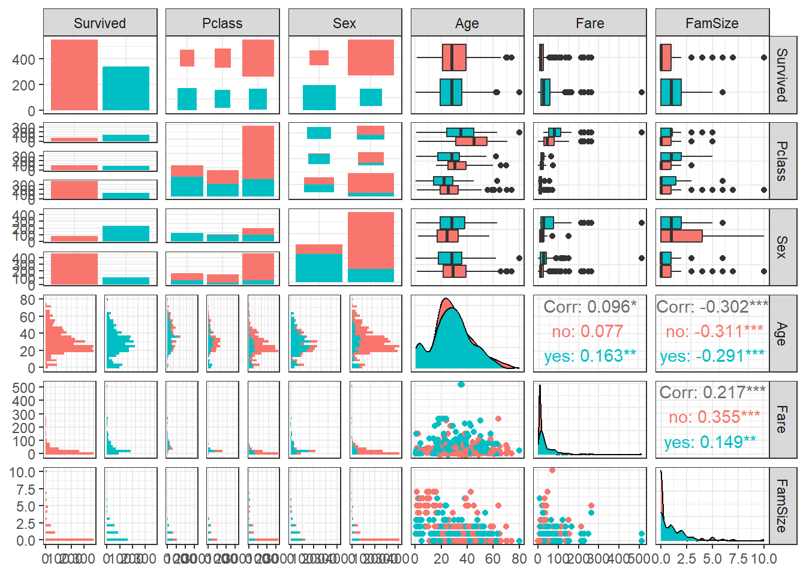
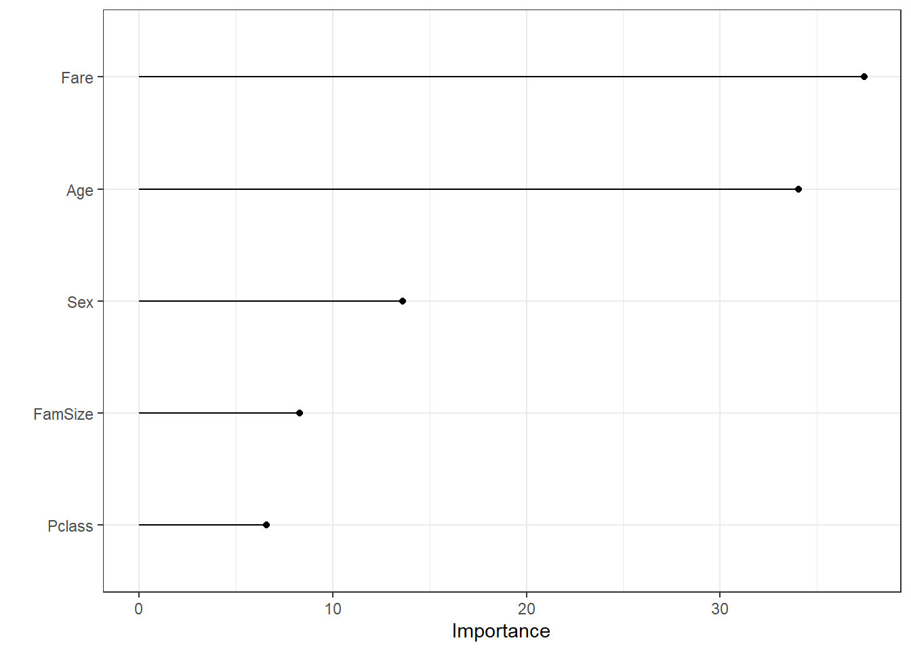
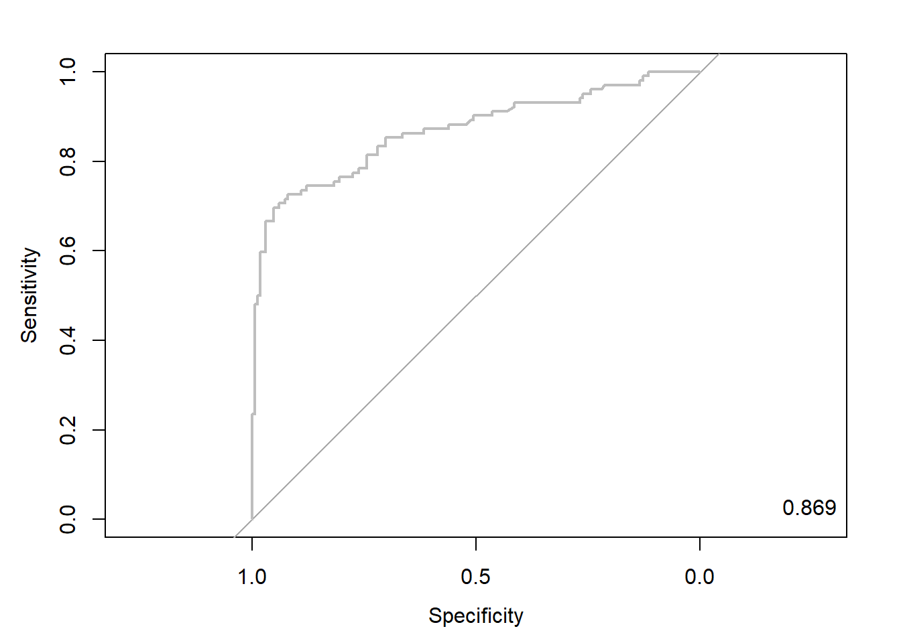
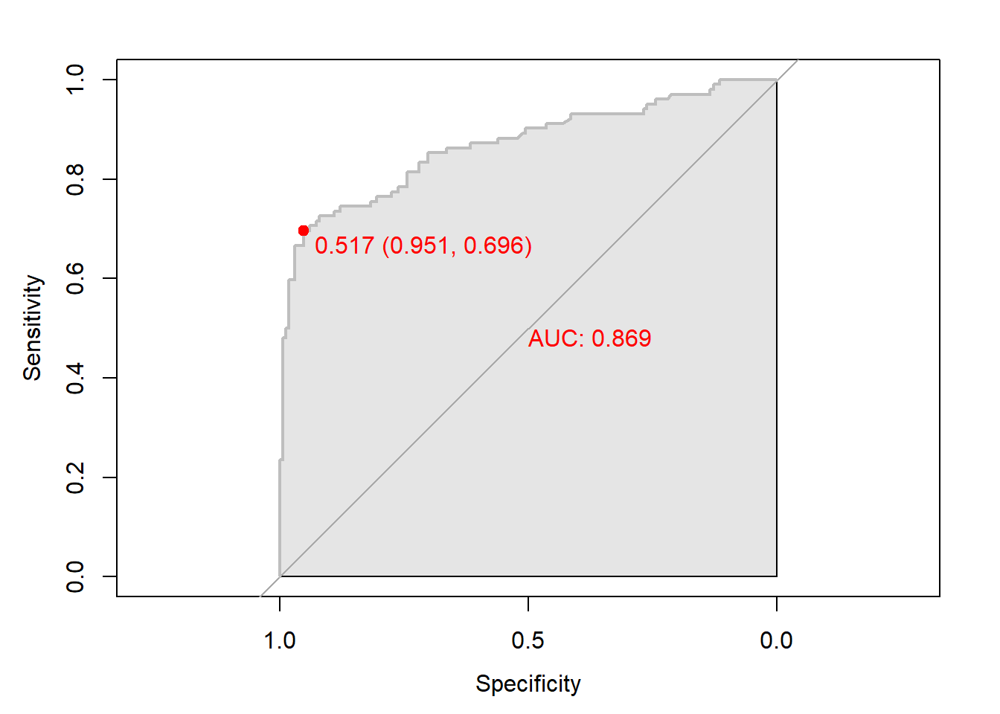
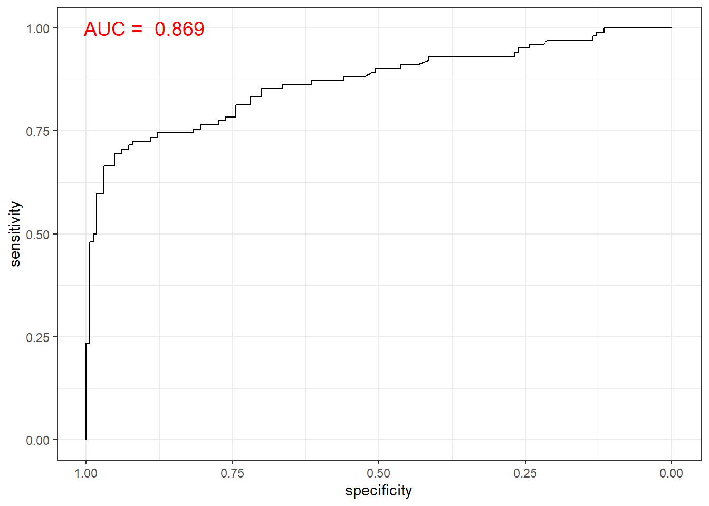
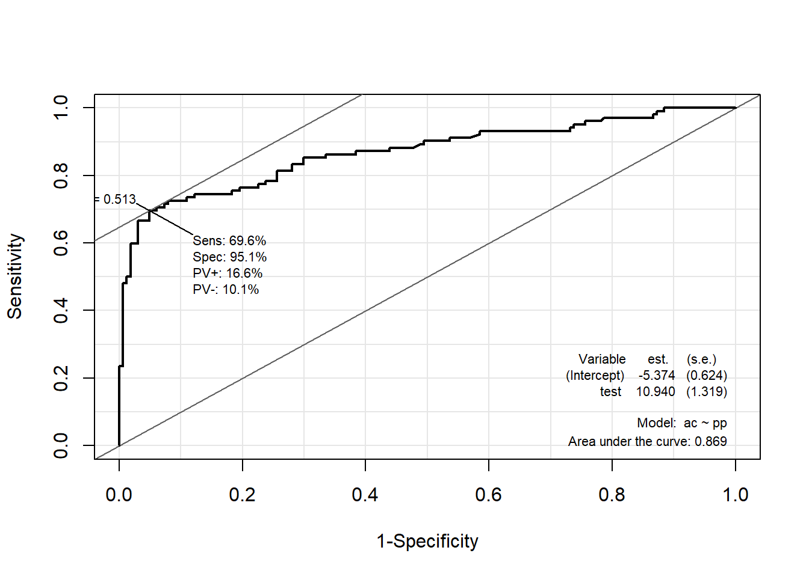
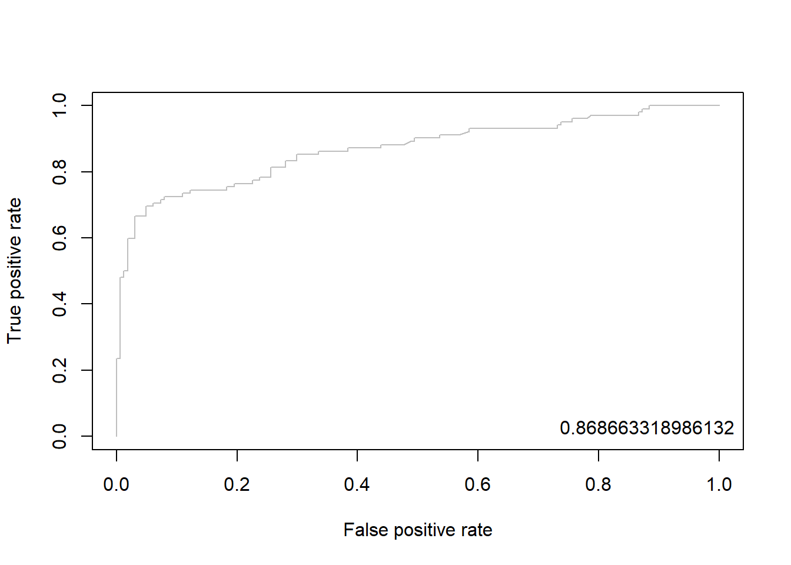
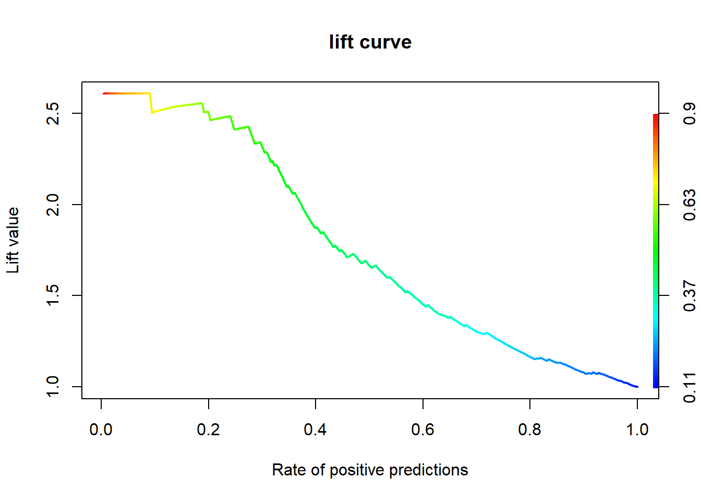

pacman::p_load("data.table",
"tidyverse",
"dplyr", "tidyr",
"ggplot2", "GGally",
"caret",
"adabag") # For boosting
titanic <- fread("../Titanic.csv") # 데이터 불러오기
titanic %>%
as_tibble15 AdaBoost
실습 자료 : 1912년 4월 15일 타이타닉호 침몰 당시 탑승객들의 정보를 기록한 데이터셋이며, 총 11개의 변수를 포함하고 있다. 이 자료에서 Target은
Survived이다.


15.1 데이터 불러오기
# A tibble: 891 × 11
Survived Pclass Name Sex Age SibSp Parch Ticket Fare Cabin Embarked
<int> <int> <chr> <chr> <dbl> <int> <int> <chr> <dbl> <chr> <chr>
1 0 3 Braund, Mr. Owen Harris male 22 1 0 A/5 21171 7.25 "" S
2 1 1 Cumings, Mrs. John Bradley (Florence Briggs Thayer) female 38 1 0 PC 17599 71.3 "C85" C
3 1 3 Heikkinen, Miss. Laina female 26 0 0 STON/O2. 3101282 7.92 "" S
4 1 1 Futrelle, Mrs. Jacques Heath (Lily May Peel) female 35 1 0 113803 53.1 "C123" S
5 0 3 Allen, Mr. William Henry male 35 0 0 373450 8.05 "" S
6 0 3 Moran, Mr. James male NA 0 0 330877 8.46 "" Q
7 0 1 McCarthy, Mr. Timothy J male 54 0 0 17463 51.9 "E46" S
8 0 3 Palsson, Master. Gosta Leonard male 2 3 1 349909 21.1 "" S
9 1 3 Johnson, Mrs. Oscar W (Elisabeth Vilhelmina Berg) female 27 0 2 347742 11.1 "" S
10 1 2 Nasser, Mrs. Nicholas (Adele Achem) female 14 1 0 237736 30.1 "" C
# ℹ 881 more rows15.2 데이터 전처리 I
titanic %<>%
data.frame() %>% # Data Frame 형태로 변환
mutate(Survived = ifelse(Survived == 1, "yes", "no")) # Target을 문자형 변수로 변환
# 1. Convert to Factor
fac.col <- c("Pclass", "Sex",
# Target
"Survived")
titanic <- titanic %>%
mutate_at(fac.col, as.factor) # 범주형으로 변환
glimpse(titanic) # 데이터 구조 확인Rows: 891
Columns: 11
$ Survived <fct> no, yes, yes, yes, no, no, no, no, yes, yes, yes, yes, no, no, no, yes, no, yes, no, yes, no, yes, yes, yes, no, yes, no, no, yes, no, no, yes, yes, no, no, no, yes, no, no, yes, no…
$ Pclass <fct> 3, 1, 3, 1, 3, 3, 1, 3, 3, 2, 3, 1, 3, 3, 3, 2, 3, 2, 3, 3, 2, 2, 3, 1, 3, 3, 3, 1, 3, 3, 1, 1, 3, 2, 1, 1, 3, 3, 3, 3, 3, 2, 3, 2, 3, 3, 3, 3, 3, 3, 3, 3, 1, 2, 1, 1, 2, 3, 2, 3, 3…
$ Name <chr> "Braund, Mr. Owen Harris", "Cumings, Mrs. John Bradley (Florence Briggs Thayer)", "Heikkinen, Miss. Laina", "Futrelle, Mrs. Jacques Heath (Lily May Peel)", "Allen, Mr. William Henry…
$ Sex <fct> male, female, female, female, male, male, male, male, female, female, female, female, male, male, female, female, male, male, female, female, male, male, female, male, female, femal…
$ Age <dbl> 22.0, 38.0, 26.0, 35.0, 35.0, NA, 54.0, 2.0, 27.0, 14.0, 4.0, 58.0, 20.0, 39.0, 14.0, 55.0, 2.0, NA, 31.0, NA, 35.0, 34.0, 15.0, 28.0, 8.0, 38.0, NA, 19.0, NA, NA, 40.0, NA, NA, 66.…
$ SibSp <int> 1, 1, 0, 1, 0, 0, 0, 3, 0, 1, 1, 0, 0, 1, 0, 0, 4, 0, 1, 0, 0, 0, 0, 0, 3, 1, 0, 3, 0, 0, 0, 1, 0, 0, 1, 1, 0, 0, 2, 1, 1, 1, 0, 1, 0, 0, 1, 0, 2, 1, 4, 0, 1, 1, 0, 0, 0, 0, 1, 5, 0…
$ Parch <int> 0, 0, 0, 0, 0, 0, 0, 1, 2, 0, 1, 0, 0, 5, 0, 0, 1, 0, 0, 0, 0, 0, 0, 0, 1, 5, 0, 2, 0, 0, 0, 0, 0, 0, 0, 0, 0, 0, 0, 0, 0, 0, 0, 2, 0, 0, 0, 0, 0, 0, 1, 0, 0, 0, 1, 0, 0, 0, 2, 2, 0…
$ Ticket <chr> "A/5 21171", "PC 17599", "STON/O2. 3101282", "113803", "373450", "330877", "17463", "349909", "347742", "237736", "PP 9549", "113783", "A/5. 2151", "347082", "350406", "248706", "38…
$ Fare <dbl> 7.2500, 71.2833, 7.9250, 53.1000, 8.0500, 8.4583, 51.8625, 21.0750, 11.1333, 30.0708, 16.7000, 26.5500, 8.0500, 31.2750, 7.8542, 16.0000, 29.1250, 13.0000, 18.0000, 7.2250, 26.0000,…
$ Cabin <chr> "", "C85", "", "C123", "", "", "E46", "", "", "", "G6", "C103", "", "", "", "", "", "", "", "", "", "D56", "", "A6", "", "", "", "C23 C25 C27", "", "", "", "B78", "", "", "", "", ""…
$ Embarked <chr> "S", "C", "S", "S", "S", "Q", "S", "S", "S", "C", "S", "S", "S", "S", "S", "S", "Q", "S", "S", "C", "S", "S", "Q", "S", "S", "S", "C", "S", "Q", "S", "C", "C", "Q", "S", "C", "S", "…# 2. Generate New Variable
titanic <- titanic %>%
mutate(FamSize = SibSp + Parch) # "FamSize = 형제 및 배우자 수 + 부모님 및 자녀 수"로 가족 수를 의미하는 새로운 변수
glimpse(titanic) # 데이터 구조 확인Rows: 891
Columns: 12
$ Survived <fct> no, yes, yes, yes, no, no, no, no, yes, yes, yes, yes, no, no, no, yes, no, yes, no, yes, no, yes, yes, yes, no, yes, no, no, yes, no, no, yes, yes, no, no, no, yes, no, no, yes, no…
$ Pclass <fct> 3, 1, 3, 1, 3, 3, 1, 3, 3, 2, 3, 1, 3, 3, 3, 2, 3, 2, 3, 3, 2, 2, 3, 1, 3, 3, 3, 1, 3, 3, 1, 1, 3, 2, 1, 1, 3, 3, 3, 3, 3, 2, 3, 2, 3, 3, 3, 3, 3, 3, 3, 3, 1, 2, 1, 1, 2, 3, 2, 3, 3…
$ Name <chr> "Braund, Mr. Owen Harris", "Cumings, Mrs. John Bradley (Florence Briggs Thayer)", "Heikkinen, Miss. Laina", "Futrelle, Mrs. Jacques Heath (Lily May Peel)", "Allen, Mr. William Henry…
$ Sex <fct> male, female, female, female, male, male, male, male, female, female, female, female, male, male, female, female, male, male, female, female, male, male, female, male, female, femal…
$ Age <dbl> 22.0, 38.0, 26.0, 35.0, 35.0, NA, 54.0, 2.0, 27.0, 14.0, 4.0, 58.0, 20.0, 39.0, 14.0, 55.0, 2.0, NA, 31.0, NA, 35.0, 34.0, 15.0, 28.0, 8.0, 38.0, NA, 19.0, NA, NA, 40.0, NA, NA, 66.…
$ SibSp <int> 1, 1, 0, 1, 0, 0, 0, 3, 0, 1, 1, 0, 0, 1, 0, 0, 4, 0, 1, 0, 0, 0, 0, 0, 3, 1, 0, 3, 0, 0, 0, 1, 0, 0, 1, 1, 0, 0, 2, 1, 1, 1, 0, 1, 0, 0, 1, 0, 2, 1, 4, 0, 1, 1, 0, 0, 0, 0, 1, 5, 0…
$ Parch <int> 0, 0, 0, 0, 0, 0, 0, 1, 2, 0, 1, 0, 0, 5, 0, 0, 1, 0, 0, 0, 0, 0, 0, 0, 1, 5, 0, 2, 0, 0, 0, 0, 0, 0, 0, 0, 0, 0, 0, 0, 0, 0, 0, 2, 0, 0, 0, 0, 0, 0, 1, 0, 0, 0, 1, 0, 0, 0, 2, 2, 0…
$ Ticket <chr> "A/5 21171", "PC 17599", "STON/O2. 3101282", "113803", "373450", "330877", "17463", "349909", "347742", "237736", "PP 9549", "113783", "A/5. 2151", "347082", "350406", "248706", "38…
$ Fare <dbl> 7.2500, 71.2833, 7.9250, 53.1000, 8.0500, 8.4583, 51.8625, 21.0750, 11.1333, 30.0708, 16.7000, 26.5500, 8.0500, 31.2750, 7.8542, 16.0000, 29.1250, 13.0000, 18.0000, 7.2250, 26.0000,…
$ Cabin <chr> "", "C85", "", "C123", "", "", "E46", "", "", "", "G6", "C103", "", "", "", "", "", "", "", "", "", "D56", "", "A6", "", "", "", "C23 C25 C27", "", "", "", "B78", "", "", "", "", ""…
$ Embarked <chr> "S", "C", "S", "S", "S", "Q", "S", "S", "S", "C", "S", "S", "S", "S", "S", "S", "Q", "S", "S", "C", "S", "S", "Q", "S", "S", "S", "C", "S", "Q", "S", "C", "C", "Q", "S", "C", "S", "…
$ FamSize <int> 1, 1, 0, 1, 0, 0, 0, 4, 2, 1, 2, 0, 0, 6, 0, 0, 5, 0, 1, 0, 0, 0, 0, 0, 4, 6, 0, 5, 0, 0, 0, 1, 0, 0, 1, 1, 0, 0, 2, 1, 1, 1, 0, 3, 0, 0, 1, 0, 2, 1, 5, 0, 1, 1, 1, 0, 0, 0, 3, 7, 0…# 3. Select Variables used for Analysis
titanic1 <- titanic %>%
dplyr::select(Survived, Pclass, Sex, Age, Fare, FamSize) # 분석에 사용할 변수 선택
glimpse(titanic1) # 데이터 구조 확인Rows: 891
Columns: 6
$ Survived <fct> no, yes, yes, yes, no, no, no, no, yes, yes, yes, yes, no, no, no, yes, no, yes, no, yes, no, yes, yes, yes, no, yes, no, no, yes, no, no, yes, yes, no, no, no, yes, no, no, yes, no…
$ Pclass <fct> 3, 1, 3, 1, 3, 3, 1, 3, 3, 2, 3, 1, 3, 3, 3, 2, 3, 2, 3, 3, 2, 2, 3, 1, 3, 3, 3, 1, 3, 3, 1, 1, 3, 2, 1, 1, 3, 3, 3, 3, 3, 2, 3, 2, 3, 3, 3, 3, 3, 3, 3, 3, 1, 2, 1, 1, 2, 3, 2, 3, 3…
$ Sex <fct> male, female, female, female, male, male, male, male, female, female, female, female, male, male, female, female, male, male, female, female, male, male, female, male, female, femal…
$ Age <dbl> 22.0, 38.0, 26.0, 35.0, 35.0, NA, 54.0, 2.0, 27.0, 14.0, 4.0, 58.0, 20.0, 39.0, 14.0, 55.0, 2.0, NA, 31.0, NA, 35.0, 34.0, 15.0, 28.0, 8.0, 38.0, NA, 19.0, NA, NA, 40.0, NA, NA, 66.…
$ Fare <dbl> 7.2500, 71.2833, 7.9250, 53.1000, 8.0500, 8.4583, 51.8625, 21.0750, 11.1333, 30.0708, 16.7000, 26.5500, 8.0500, 31.2750, 7.8542, 16.0000, 29.1250, 13.0000, 18.0000, 7.2250, 26.0000,…
$ FamSize <int> 1, 1, 0, 1, 0, 0, 0, 4, 2, 1, 2, 0, 0, 6, 0, 0, 5, 0, 1, 0, 0, 0, 0, 0, 4, 6, 0, 5, 0, 0, 0, 1, 0, 0, 1, 1, 0, 0, 2, 1, 1, 1, 0, 3, 0, 0, 1, 0, 2, 1, 5, 0, 1, 1, 1, 0, 0, 0, 3, 7, 0…15.3 데이터 탐색
ggpairs(titanic1,
aes(colour = Survived)) + # Target의 범주에 따라 색깔을 다르게 표현
theme_bw()
ggpairs(titanic1,
aes(colour = Survived, alpha = 0.8)) + # Target의 범주에 따라 색깔을 다르게 표현
scale_colour_manual(values = c("#00798c", "#d1495b")) + # 특정 색깔 지정
scale_fill_manual(values = c("#00798c", "#d1495b")) + # 특정 색깔 지정
theme_bw()
15.4 데이터 분할
# Partition (Training Dataset : Test Dataset = 7:3)
y <- titanic1$Survived # Target
set.seed(200)
ind <- createDataPartition(y, p = 0.7, list =T) # Index를 이용하여 7:3으로 분할
titanic.trd <- titanic1[ind$Resample1,] # Training Dataset
titanic.ted <- titanic1[-ind$Resample1,] # Test Dataset15.5 데이터 전처리 II
# Imputation
titanic.trd.Imp <- titanic.trd %>%
mutate(Age = replace_na(Age, mean(Age, na.rm = TRUE))) # 평균으로 결측값 대체
titanic.ted.Imp <- titanic.ted %>%
mutate(Age = replace_na(Age, mean(titanic.trd$Age, na.rm = TRUE))) # Training Dataset을 이용하여 결측값 대체
glimpse(titanic.trd.Imp) # 데이터 구조 확인Rows: 625
Columns: 6
$ Survived <fct> no, yes, yes, no, no, no, yes, yes, yes, yes, no, no, yes, no, yes, no, yes, no, no, no, yes, no, no, yes, yes, no, no, no, no, no, yes, no, no, no, yes, no, yes, no, no, no, yes, n…
$ Pclass <fct> 3, 3, 1, 3, 3, 3, 3, 2, 3, 1, 3, 3, 2, 3, 3, 2, 1, 3, 3, 1, 3, 3, 1, 1, 3, 2, 1, 1, 3, 3, 3, 3, 2, 3, 3, 3, 3, 3, 3, 3, 1, 1, 1, 3, 3, 1, 3, 1, 3, 3, 3, 3, 3, 3, 2, 3, 3, 3, 1, 2, 3…
$ Sex <fct> male, female, female, male, male, male, female, female, female, female, male, female, male, female, female, male, male, female, male, male, female, male, male, female, female, male,…
$ Age <dbl> 22.00000, 26.00000, 35.00000, 35.00000, 29.93737, 2.00000, 27.00000, 14.00000, 4.00000, 58.00000, 39.00000, 14.00000, 29.93737, 31.00000, 29.93737, 35.00000, 28.00000, 8.00000, 29.9…
$ Fare <dbl> 7.2500, 7.9250, 53.1000, 8.0500, 8.4583, 21.0750, 11.1333, 30.0708, 16.7000, 26.5500, 31.2750, 7.8542, 13.0000, 18.0000, 7.2250, 26.0000, 35.5000, 21.0750, 7.2250, 263.0000, 7.8792,…
$ FamSize <int> 1, 0, 1, 0, 0, 4, 2, 1, 2, 0, 6, 0, 0, 1, 0, 0, 0, 4, 0, 5, 0, 0, 0, 1, 0, 0, 1, 1, 0, 2, 1, 1, 1, 0, 0, 1, 0, 2, 1, 5, 1, 1, 0, 7, 0, 0, 5, 0, 2, 7, 1, 0, 0, 0, 2, 0, 0, 0, 0, 0, 3…glimpse(titanic.ted.Imp) # 데이터 구조 확인Rows: 266
Columns: 6
$ Survived <fct> yes, no, no, yes, no, yes, yes, yes, yes, yes, no, no, yes, yes, no, yes, no, yes, yes, no, yes, no, no, no, no, no, no, yes, yes, no, no, no, no, no, no, no, no, no, no, yes, no, n…
$ Pclass <fct> 1, 1, 3, 2, 3, 2, 3, 3, 3, 2, 3, 3, 2, 2, 3, 2, 1, 3, 2, 3, 3, 2, 2, 3, 3, 3, 3, 1, 2, 2, 3, 3, 3, 3, 3, 2, 3, 2, 2, 2, 3, 3, 2, 1, 3, 1, 3, 2, 1, 3, 3, 3, 3, 3, 3, 3, 3, 1, 3, 1, 3…
$ Sex <fct> female, male, male, female, male, male, female, female, male, female, male, male, female, female, male, female, male, male, female, male, female, male, male, male, male, male, male,…
$ Age <dbl> 38.00000, 54.00000, 20.00000, 55.00000, 2.00000, 34.00000, 15.00000, 38.00000, 29.93737, 3.00000, 29.93737, 21.00000, 29.00000, 21.00000, 28.50000, 5.00000, 45.00000, 29.93737, 29.0…
$ Fare <dbl> 71.2833, 51.8625, 8.0500, 16.0000, 29.1250, 13.0000, 8.0292, 31.3875, 7.2292, 41.5792, 8.0500, 7.8000, 26.0000, 10.5000, 7.2292, 27.7500, 83.4750, 15.2458, 10.5000, 8.1583, 7.9250, …
$ FamSize <int> 1, 0, 0, 0, 5, 0, 0, 6, 0, 3, 0, 0, 1, 0, 0, 3, 1, 2, 0, 0, 6, 0, 0, 0, 0, 4, 0, 1, 1, 1, 0, 0, 0, 0, 0, 1, 6, 2, 1, 0, 0, 1, 0, 2, 0, 0, 0, 0, 1, 0, 0, 1, 5, 2, 5, 0, 5, 0, 4, 0, 6…15.6 모형 훈련
Boosting은 다수의 약한 학습자(간단하면서 성능이 낮은 예측 모형)을 순차적으로 학습하는 앙상블 기법이다. Boosting의 특징은 이전 모형의 오차를 반영하여 다음 모형을 생성하며, 오차를 개선하는 방향으로 학습을 수행한다.

AdaBoost는 최초로 Boosting 기법을 사용한 머신러닝 알고리듬으로 잘못 분류한 case에 대해 높은 Sample Weight를 부여하여 오차를 개선해 나가는 학습 방식이다.
R에서 AdaBoost를 수행하기 위해 package "adabag"에서 제공하는 함수 boosting()를 이용할 수 있으며, 함수의 자세한 옵션은 여기를 참고한다. 게다가, package "adabag"는 package "rpart"를 이용하여 트리를 생성하기 때문에 함수 rpart.control()을 이용하여 다양한 옵션을 입력할 수 있으며, 함수의 자세한 옵션은 여기를 참고한다.
boosting(formula, data, mfinal, ...) # AdaBoost
boosting.cv(formula, data, v, mfinal, ...) # AdaBoost based on Cross Validationformula: Target과 예측 변수의 관계를 표현하기 위한 함수로써 일반적으로Target ~ 예측 변수의 형태로 표현한다.data:formula에 포함하고 있는 변수들의 데이터셋(Data Frame)mfinal: 반복 횟수(= 생성하고자 하는 트리 개수)v: \(k\)-Fold Cross Validation의 \(k\)(= Fold 수)
set.seed(100) # Seed 고정 -> 동일한 결과를 출력하기 위해
titanic.ada <- boosting(Survived~.,
data = titanic.trd.Imp,
mfinal = 50) Caution! 함수 boosting()은 기본값으로 깊이가 30인 트리를 생성한다. 만약 "stump"를 생성하고 싶으면 아래의 코드를 수행하면 되지만 시간이 너무 오래 걸리는 단점이 있다.
rc <- rpart.control(maxdepth = 1)
set.seed(100)
titanic.ada <- boosting(Survived~.,
data = titanic.trd.Imp,
mfinal = 50,
control = rc)# 변수 중요도
titanic.ada$importance Age FamSize Fare Pclass Sex
34.064246 8.276373 37.457786 6.587923 13.613672 # 변수 중요도 plot
imp <- data.frame(Importance = titanic.ada$importance)
imp$varnames <- rownames(imp)
rownames(imp) <- NULL
ggplot(imp, aes(x = reorder(varnames, Importance), y = Importance)) +
geom_point() +
geom_segment(aes(x = varnames, xend = varnames,
y = 0, yend = Importance)) +
ylab("Importance") +
xlab("") +
coord_flip() +
theme_bw()
Result! 변수 Fare이 Target Survived을 분류하는 데 있어 중요하다.
# 각 트리의 모형 가중치
titanic.ada$weights [1] 0.78295582 0.56826060 0.45432590 0.38850942 0.43218725 0.36848680 0.38647782 0.34425320 0.41595276 0.34136453 0.22999285 0.32465083 0.40988159 0.33790620 0.32800254 0.30524638 0.16244452
[18] 0.29925562 0.26506851 0.17066854 0.26151169 0.23265334 0.13550507 0.25298743 0.25622890 0.17345807 0.14746377 0.26927469 0.22046450 0.25118916 0.21297254 0.22829963 0.14653144 0.22614864
[35] 0.24631308 0.26052245 0.23013778 0.24944529 0.21619601 0.14712742 0.19006330 0.10435622 0.24897459 0.14419243 0.13831085 0.24090084 0.05429047 0.17232969 0.14102667 0.13718293Result! 모형 가중치는 해당 예측 모형이 얼마나 정확한지에 따라 결정되며, 정확도가 높을수록 높은 가중치가 부여된다.
15.7 모형 평가
Caution! 모형 평가를 위해 Test Dataset에 대한 예측 class/확률 이 필요하며, 함수 predict()를 이용하여 생성한다.
# 예측 class/확률 생성
test.ada.pred <- predict(titanic.ada,
newdata = titanic.ted.Imp[,-1]) # Test Dataset including Only 예측 변수
# 예측 class
test.ada.pred$class [1] "yes" "no" "no" "yes" "no" "no" "yes" "no" "no" "yes" "no" "yes" "yes" "yes" "no" "yes" "no" "no" "yes" "no" "no" "yes" "no" "no" "no" "no" "no" "no" "yes" "no" "yes" "no"
[33] "no" "no" "no" "no" "no" "no" "no" "yes" "no" "no" "no" "yes" "no" "no" "no" "no" "yes" "no" "no" "no" "no" "no" "no" "yes" "no" "no" "no" "yes" "no" "no" "yes" "no"
[65] "yes" "no" "no" "no" "no" "no" "no" "no" "no" "yes" "no" "yes" "no" "no" "no" "no" "yes" "no" "yes" "no" "no" "no" "no" "no" "no" "no" "no" "no" "no" "yes" "yes" "yes"
[97] "yes" "yes" "no" "no" "no" "yes" "yes" "no" "no" "yes" "no" "yes" "no" "yes" "yes" "no" "yes" "no" "no" "no" "yes" "no" "no" "no" "yes" "yes" "no" "yes" "no" "no" "no" "yes"
[129] "no" "yes" "yes" "yes" "no" "no" "yes" "yes" "no" "no" "no" "no" "yes" "no" "no" "no" "yes" "no" "no" "no" "no" "no" "no" "yes" "no" "no" "no" "yes" "no" "no" "no" "no"
[161] "yes" "yes" "yes" "yes" "no" "yes" "yes" "no" "no" "no" "no" "no" "yes" "yes" "yes" "no" "yes" "no" "no" "no" "yes" "no" "no" "yes" "no" "no" "no" "yes" "no" "yes" "no" "no"
[193] "no" "no" "no" "no" "no" "no" "no" "no" "no" "yes" "no" "no" "no" "no" "no" "yes" "yes" "no" "no" "yes" "yes" "no" "no" "no" "yes" "yes" "no" "no" "yes" "no" "no" "yes"
[225] "yes" "yes" "no" "no" "no" "no" "no" "no" "no" "no" "no" "no" "no" "yes" "no" "no" "no" "yes" "no" "no" "no" "yes" "no" "yes" "no" "no" "yes" "no" "no" "no" "no" "yes"
[257] "yes" "yes" "no" "yes" "no" "yes" "yes" "no" "yes" "no" # 예측 확률
test.ada.pred$prob [,1] [,2]
[1,] 0.2380209 0.7619791
[2,] 0.5606343 0.4393657
[3,] 0.6880075 0.3119925
[4,] 0.3819148 0.6180852
[5,] 0.6367723 0.3632277
[6,] 0.6269603 0.3730397
[7,] 0.3918065 0.6081935
[8,] 0.7618416 0.2381584
[9,] 0.6998049 0.3001951
[10,] 0.2820866 0.7179134
[11,] 0.7933984 0.2066016
[12,] 0.4975126 0.5024874
[13,] 0.3410832 0.6589168
[14,] 0.4374145 0.5625855
[15,] 0.6053940 0.3946060
[16,] 0.3022196 0.6977804
[17,] 0.6302883 0.3697117
[18,] 0.5137920 0.4862080
[19,] 0.3349145 0.6650855
[20,] 0.6059908 0.3940092
[21,] 0.6999664 0.3000336
[22,] 0.4579267 0.5420733
[23,] 0.7640663 0.2359337
[24,] 0.7933984 0.2066016
[25,] 0.8656613 0.1343387
[26,] 0.8494653 0.1505347
[27,] 0.8552787 0.1447213
[28,] 0.6003552 0.3996448
[29,] 0.3602870 0.6397130
[30,] 0.6438633 0.3561367
[31,] 0.4036295 0.5963705
[32,] 0.7051926 0.2948074
[33,] 0.7949698 0.2050302
[34,] 0.6110658 0.3889342
[35,] 0.5612269 0.4387731
[36,] 0.7964444 0.2035556
[37,] 0.6892576 0.3107424
[38,] 0.7394925 0.2605075
[39,] 0.5345683 0.4654317
[40,] 0.3441134 0.6558866
[41,] 0.6476855 0.3523145
[42,] 0.6410950 0.3589050
[43,] 0.8184373 0.1815627
[44,] 0.2310725 0.7689275
[45,] 0.6281190 0.3718810
[46,] 0.5575429 0.4424571
[47,] 0.7741464 0.2258536
[48,] 0.5085365 0.4914635
[49,] 0.2646717 0.7353283
[50,] 0.7763893 0.2236107
[51,] 0.7271251 0.2728749
[52,] 0.7519280 0.2480720
[53,] 0.5492291 0.4507709
[54,] 0.5013203 0.4986797
[55,] 0.8133695 0.1866305
[56,] 0.4638879 0.5361121
[57,] 0.5969433 0.4030567
[58,] 0.5399915 0.4600085
[59,] 0.8441545 0.1558455
[60,] 0.2910053 0.7089947
[61,] 0.7353196 0.2646804
[62,] 0.6919695 0.3080305
[63,] 0.4074803 0.5925197
[64,] 0.5813353 0.4186647
[65,] 0.3756294 0.6243706
[66,] 0.5296252 0.4703748
[67,] 0.8061569 0.1938431
[68,] 0.5519186 0.4480814
[69,] 0.7223923 0.2776077
[70,] 0.5726111 0.4273889
[71,] 0.5903052 0.4096948
[72,] 0.5797197 0.4202803
[73,] 0.6157677 0.3842323
[74,] 0.1726817 0.8273183
[75,] 0.5447891 0.4552109
[76,] 0.4916150 0.5083850
[77,] 0.5374432 0.4625568
[78,] 0.7754588 0.2245412
[79,] 0.7763893 0.2236107
[80,] 0.5972677 0.4027323
[81,] 0.4560094 0.5439906
[82,] 0.6476855 0.3523145
[83,] 0.4933356 0.5066644
[84,] 0.7559501 0.2440499
[85,] 0.5756480 0.4243520
[86,] 0.7776756 0.2223244
[87,] 0.5494400 0.4505600
[88,] 0.5523015 0.4476985
[89,] 0.6738163 0.3261837
[90,] 0.6164570 0.3835430
[91,] 0.5769028 0.4230972
[92,] 0.5955537 0.4044463
[93,] 0.8351898 0.1648102
[94,] 0.4525701 0.5474299
[95,] 0.2901935 0.7098065
[96,] 0.2560765 0.7439235
[97,] 0.4652957 0.5347043
[98,] 0.4421194 0.5578806
[99,] 0.6110658 0.3889342
[100,] 0.8157686 0.1842314
[101,] 0.6449280 0.3550720
[102,] 0.1667904 0.8332096
[103,] 0.3607675 0.6392325
[104,] 0.6027602 0.3972398
[105,] 0.6191326 0.3808674
[106,] 0.1026672 0.8973328
[107,] 0.8184373 0.1815627
[108,] 0.3458047 0.6541953
[109,] 0.8916389 0.1083611
[110,] 0.3990216 0.6009784
[111,] 0.3262811 0.6737189
[112,] 0.8664500 0.1335500
[113,] 0.4525701 0.5474299
[114,] 0.5819211 0.4180789
[115,] 0.5320950 0.4679050
[116,] 0.6141752 0.3858248
[117,] 0.2643221 0.7356779
[118,] 0.6353850 0.3646150
[119,] 0.5650854 0.4349146
[120,] 0.8368426 0.1631574
[121,] 0.1192343 0.8807657
[122,] 0.4051593 0.5948407
[123,] 0.5970041 0.4029959
[124,] 0.3471779 0.6528221
[125,] 0.5855429 0.4144571
[126,] 0.5109998 0.4890002
[127,] 0.6174761 0.3825239
[128,] 0.3586394 0.6413606
[129,] 0.6148178 0.3851822
[130,] 0.3939032 0.6060968
[131,] 0.4587025 0.5412975
[132,] 0.4153344 0.5846656
[133,] 0.6731515 0.3268485
[134,] 0.8141873 0.1858127
[135,] 0.4241869 0.5758131
[136,] 0.3694687 0.6305313
[137,] 0.5211940 0.4788060
[138,] 0.7391721 0.2608279
[139,] 0.7933984 0.2066016
[140,] 0.6338633 0.3661367
[141,] 0.1851840 0.8148160
[142,] 0.7419194 0.2580806
[143,] 0.7864270 0.2135730
[144,] 0.7080648 0.2919352
[145,] 0.2990145 0.7009855
[146,] 0.6317225 0.3682775
[147,] 0.7306326 0.2693674
[148,] 0.7792936 0.2207064
[149,] 0.7864270 0.2135730
[150,] 0.5557747 0.4442253
[151,] 0.5415688 0.4584312
[152,] 0.4663978 0.5336022
[153,] 0.6157677 0.3842323
[154,] 0.7638300 0.2361700
[155,] 0.7155637 0.2844363
[156,] 0.4377982 0.5622018
[157,] 0.7726810 0.2273190
[158,] 0.5309792 0.4690208
[159,] 0.6998049 0.3001951
[160,] 0.6998049 0.3001951
[161,] 0.4023619 0.5976381
[162,] 0.4431348 0.5568652
[163,] 0.4299379 0.5700621
[164,] 0.3859350 0.6140650
[165,] 0.7155637 0.2844363
[166,] 0.2602355 0.7397645
[167,] 0.4230678 0.5769322
[168,] 0.6393824 0.3606176
[169,] 0.5616746 0.4383254
[170,] 0.5883392 0.4116608
[171,] 0.6406999 0.3593001
[172,] 0.7973211 0.2026789
[173,] 0.2373659 0.7626341
[174,] 0.4525701 0.5474299
[175,] 0.2096100 0.7903900
[176,] 0.8111473 0.1888527
[177,] 0.3591942 0.6408058
[178,] 0.8293012 0.1706988
[179,] 0.6998049 0.3001951
[180,] 0.7051926 0.2948074
[181,] 0.4871692 0.5128308
[182,] 0.6758645 0.3241355
[183,] 0.6620524 0.3379476
[184,] 0.2489002 0.7510998
[185,] 0.7129300 0.2870700
[186,] 0.7080648 0.2919352
[187,] 0.8593307 0.1406693
[188,] 0.3217332 0.6782668
[189,] 0.7481424 0.2518576
[190,] 0.4447027 0.5552973
[191,] 0.8045524 0.1954476
[192,] 0.7051926 0.2948074
[193,] 0.5362133 0.4637867
[194,] 0.8629472 0.1370528
[195,] 0.6790558 0.3209442
[196,] 0.5407796 0.4592204
[197,] 0.5185768 0.4814232
[198,] 0.5117530 0.4882470
[199,] 0.7278020 0.2721980
[200,] 0.7864270 0.2135730
[201,] 0.6179546 0.3820454
[202,] 0.4894940 0.5105060
[203,] 0.8798358 0.1201642
[204,] 0.6764211 0.3235789
[205,] 0.6889804 0.3110196
[206,] 0.5792763 0.4207237
[207,] 0.7396085 0.2603915
[208,] 0.4871692 0.5128308
[209,] 0.4023921 0.5976079
[210,] 0.7315768 0.2684232
[211,] 0.6480763 0.3519237
[212,] 0.4575319 0.5424681
[213,] 0.2843872 0.7156128
[214,] 0.7396085 0.2603915
[215,] 0.7966983 0.2033017
[216,] 0.7118023 0.2881977
[217,] 0.4947831 0.5052169
[218,] 0.2229925 0.7770075
[219,] 0.7864270 0.2135730
[220,] 0.8425537 0.1574463
[221,] 0.4780868 0.5219132
[222,] 0.5971334 0.4028666
[223,] 0.6364989 0.3635011
[224,] 0.3384311 0.6615689
[225,] 0.2446014 0.7553986
[226,] 0.2985430 0.7014570
[227,] 0.5085365 0.4914635
[228,] 0.7155637 0.2844363
[229,] 0.6569527 0.3430473
[230,] 0.5085938 0.4914062
[231,] 0.5909401 0.4090599
[232,] 0.6164125 0.3835875
[233,] 0.6892770 0.3107230
[234,] 0.7776756 0.2223244
[235,] 0.5807449 0.4192551
[236,] 0.7390075 0.2609925
[237,] 0.6524395 0.3475605
[238,] 0.3334475 0.6665525
[239,] 0.7728687 0.2271313
[240,] 0.7590017 0.2409983
[241,] 0.6175161 0.3824839
[242,] 0.1432780 0.8567220
[243,] 0.5647913 0.4352087
[244,] 0.6279996 0.3720004
[245,] 0.8142066 0.1857934
[246,] 0.1825833 0.8174167
[247,] 0.6476855 0.3523145
[248,] 0.2205410 0.7794590
[249,] 0.7862632 0.2137368
[250,] 0.7871861 0.2128139
[251,] 0.3980471 0.6019529
[252,] 0.6431673 0.3568327
[253,] 0.5320256 0.4679744
[254,] 0.8664500 0.1335500
[255,] 0.6722047 0.3277953
[256,] 0.3126791 0.6873209
[257,] 0.3312616 0.6687384
[258,] 0.2780197 0.7219803
[259,] 0.5150944 0.4849056
[260,] 0.2449884 0.7550116
[261,] 0.8265046 0.1734954
[262,] 0.4466415 0.5533585
[263,] 0.4070478 0.5929522
[264,] 0.6364983 0.3635017
[265,] 0.4228538 0.5771462
[266,] 0.6430485 0.356951515.7.1 ConfusionMatrix
test.ada.class <- as.factor(test.ada.pred$class) # Converting Character into Factor
CM <- caret::confusionMatrix(test.ada.class, titanic.ted.Imp$Survived,
positive = "yes") # confusionMatrix(예측 class, 실제 class, positive = "관심 class")
CMConfusion Matrix and Statistics
Reference
Prediction no yes
no 151 29
yes 13 73
Accuracy : 0.8421
95% CI : (0.7926, 0.8838)
No Information Rate : 0.6165
P-Value [Acc > NIR] : 6.804e-16
Kappa : 0.6559
Mcnemar's Test P-Value : 0.02064
Sensitivity : 0.7157
Specificity : 0.9207
Pos Pred Value : 0.8488
Neg Pred Value : 0.8389
Prevalence : 0.3835
Detection Rate : 0.2744
Detection Prevalence : 0.3233
Balanced Accuracy : 0.8182
'Positive' Class : yes
15.7.2 ROC 곡선
# 예측 확률
test.ada.prob <- test.ada.pred$prob[,2] # "Survived = yes"에 대한 예측 확률
ac <- titanic.ted.Imp$Survived # Test Dataset의 실제 class
pp <- as.numeric(test.ada.prob) # 예측 확률을 수치형으로 변환15.7.2.1 Package “pROC”
pacman::p_load("pROC")
ada.roc <- roc(ac, pp, plot = T, col = "gray") # roc(실제 class, 예측 확률)
auc <- round(auc(ada.roc), 3)
legend("bottomright", legend = auc, bty = "n")
Caution! Package "pROC"를 통해 출력한 ROC 곡선은 다양한 함수를 이용해서 그래프를 수정할 수 있다.
# 함수 plot.roc() 이용
plot.roc(ada.roc,
col="gray", # Line Color
print.auc = TRUE, # AUC 출력 여부
print.auc.col = "red", # AUC 글씨 색깔
print.thres = TRUE, # Cutoff Value 출력 여부
print.thres.pch = 19, # Cutoff Value를 표시하는 도형 모양
print.thres.col = "red", # Cutoff Value를 표시하는 도형의 색깔
auc.polygon = TRUE, # 곡선 아래 면적에 대한 여부
auc.polygon.col = "gray90") # 곡선 아래 면적의 색깔
# 함수 ggroc() 이용
ggroc(ada.roc) +
annotate(geom = "text", x = 0.9, y = 1.0,
label = paste("AUC = ", auc),
size = 5,
color="red") +
theme_bw()
15.7.2.2 Package “Epi”
pacman::p_load("Epi")
# install_version("etm", version = "1.1", repos = "http://cran.us.r-project.org")
ROC(pp, ac, plot = "ROC") # ROC(예측 확률, 실제 class) 
15.7.2.3 Package “ROCR”
pacman::p_load("ROCR")
ada.pred <- prediction(pp, ac) # prediction(예측 확률, 실제 class)
ada.perf <- performance(ada.pred, "tpr", "fpr") # performance(, "민감도", "1-특이도")
plot(ada.perf, col = "gray") # ROC Curve
perf.auc <- performance(ada.pred, "auc") # AUC
auc <- attributes(perf.auc)$y.values
legend("bottomright", legend = auc, bty = "n")
15.7.3 향상 차트
15.7.3.1 Package “ROCR”
ada.perf <- performance(ada.pred, "lift", "rpp") # Lift Chart
plot(ada.perf, main = "lift curve",
colorize = T, # Coloring according to cutoff
lwd = 2) 